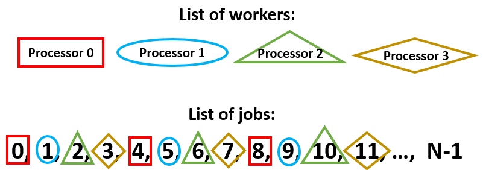
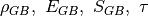

3.6. Tutorial 6: Batch submission for computing clusters¶
See also
The example treated here is in the file sesame_batch_job.py located in the examples\tutorial6 directory of the distribution.
3.6.1. Running Sesame on a cluster¶
Next we give an example of running Sesame on a computing cluster. This can be accomplished in several different ways; the most efficient way depends on the details of the cluster environment. For our example, the prerequisites libraries are:
The basic idea is illustrated in schematic below (note we follow MPI and python convention where indices start from 0). We have more than one processor available to execute all of the (independent) jobs. In this case, we’ll assign the jobs as shown in the figure:
Any executable which uses MPI is called from the command line using the prefix mpirun. For example, the script “parallel_batch_example.py” is run on 32 processors with the following command:
mpirun -np 32 python3 parallel_batch_example.py
3.6.2. Parallel script description¶
We first import some additional packages:
import numpy as np
import sesame
import itertools
from mpi4py import MPI
The first half of the script contains a function called system. The system function takes parameter values as input and constructs a system object. This works as in previous tutorials, so we’ll skip over it for now and begin with the second half contains a block of code, which begins:
if __name__ == '__main__':
Calling “parallel_batch_example.py” runs the code within the block contained in this “main” block. In the next section we describe the “main” code, which performs the actual parallel-ization of the job.
3.6.3. Cycling over parameters on a computing cluster¶
The primary task of the “main” script is to distribute independent serial jobs among an arbitrary number of processors. This is the easiest type of parallel computing (known as “embarassingly parallel”), and requires only a couple of additional lines of code.
We first initialize the MPI library with the command:
mpi_comm = MPI.COMM_WORLD
We next determine the total number of processors available with mpi_comm.Get_size(), and the “rank” of a particular instance of the program using mpi_comm.Get_rank(). In the schematic shown at the beginning, mpisize=4, and each processor is assigned its own rank: 0, 1, 2, or 3. The processors will all run the code identically, with the exception that each has its own unique value of mpirank:
mpirank = mpi_comm.Get_rank()
mpisize = mpi_comm.Get_size()
We define the set of parameter lists we want to study:
rho_GBlist = [1e11, 1e12, 1e13] # [1/cm^2]
E_GBlist = [-.3, 0, .3] # [eV]
S_GBlist = [1e-14, 1e-15, 1e-16] # [cm^2]
taulist = [1e-7, 1e-8, 1e-9] # [s]
We use the itertools product function to form a list of all combinations of parameter values. The total number of jobs (njobs is equal to the product of the length of all parameter lists. This can get quite large if we vary several parameters (for this case we have 180 jobs):
paramlist = list(itertools.product(rho_GBlist, E_GBlist, S_GBlist, taulist))
njobs = len(paramlist)
Here’s where the parallel-ization of the batch processes enters. Each node only needs to compute a subset of all parameters. We set the relevant parameters for each node with the function range. The inputs are: starting index, ending index, step size:
my_param_indices = range(mpirank,njobs,mpisize)
This partitions the jobs as shown at the top of the page: each processor starts on a different job (the first job index equals the mpirank value) and skips over mpisize jobs to the next one. In this way we cover all jobs roughly equally between all the processors.
Next we define two arrays in which to store the computed I-V values. One of them is a local array, the other is a “global” array into which all the computed values will be set at the end of the program:
# Define array to store computed J-V values
jvset_local = np.zeros([njobs, len(voltages)])
jvset = np.zeros([njobs, len(voltages)])
Most of the parallel-ization is completed. The only remaining parallel component of code occurs at the very end, when we compile the results from all the processors into a single array.
3.6.4. Defining the system¶
We define a function which takes in a list of parameters. In this case, the parameters are . The construction of the system follows the previous examples:
def system(params):
# we assume the params are given in order: [rho_GB, E_GB, S_GB, tau]
rho_GB = params[0]
E_GB = params[1]
S_GB = params[2]
tau = params[3]
# Dimensions of the system
Lx = 3e-4 # [cm]
Ly = 3e-4 # [cm]
# Mesh
x = np.concatenate((np.linspace(0, 0.2e-4, 30, endpoint=False),
np.linspace(0.2e-4, 1.4e-4, 60, endpoint=False),
np.linspace(1.4e-4, 2.7e-4, 60, endpoint=False),
np.linspace(2.7e-4, 2.98e-4, 30, endpoint=False),
np.linspace(2.98e-4, Lx, 10)))
y = np.concatenate((np.linspace(0, 1.25e-4, 60, endpoint=False),
np.linspace(1.25e-4, 1.75e-4, 50, endpoint=False),
np.linspace(1.75e-4, Ly, 60)))
sys = sesame.Builder(x, y) # Create a system
# Dictionary with the material parameters
mat = {'Nc': 8e17, 'Nv': 1.8e19, 'Eg': 1.5, 'epsilon': 9.4, 'Et': 0,
'mu_e': 320, 'mu_h': 40, 'tau_e': tau, 'tau_h': tau}
sys.add_material(mat) # Add the material to the system
junction = .1e-4 # [cm]
# Define a function specifiying the n-type region
def region1(pos):
x, y = pos
return x < junction
# Define a function specifiying the p-type region
def region2(pos):
x, y = pos
return x >= junction
nD = 1e17 # Donor density [cm^-3]
sys.add_donor(nD, region1) # Add the donors
nA = 1e15 # Acceptor density [cm^-3]
sys.add_acceptor(nA, region2) # Add the acceptors
# Define contacts: CdS and CdTe contacts are Ohmic
sys.contact_type('Ohmic', 'Ohmic')
Sn_left, Sp_left, Sn_right, Sp_right = 1e7, 1e7, 1e7, 1e7
sys.contact_S(Sn_left, Sp_left, Sn_right, Sp_right)
# Specify the two points that make the line containing additional charges
p1 = (0.1e-4, 1.5e-4) # [cm]
p2 = (2.9e-4, 1.5e-4) # [cm]
# Add donor defect along GB
sys.add_line_defects([p1, p2], rho_GB, S_GB, E=E_GB, transition=(1, 0))
# Add acceptor defect along GB
sys.add_line_defects([p1, p2], rho_GB, S_GB, E=E_GB, transition=(0, -1))
return sys
Here we define the set of applied voltages:
# Specify applied voltages
voltages = np.linspace(0, .9, 10)
Now we cycle over all the parameter sets which apply to a given node:
# cycle over all parameter sets
for myjobcounter in my_param_indices:
# Get system for given set of parameters
params = paramlist[myjobcounter]
sys = system(params)
# Get equilibrium solution
eqsolution = sesame.solve_equilibrium(sys)
# Define a function for generation profile
f = lambda x, y: 2.3e21 * np.exp(-2.3e4 * x)
# add generation to the system
sys.generation(f)
# Specify output filename for given parameter set
outputfile = ''
for paramvalue in params:
outputfile = outputfile + '{0}_'.format(paramvalue)
# Compute J-V curve
jv = sesame.IVcurve(sys, voltages, eqsolution, outputfile)
# Save computed J-V in array
jvset_local[myjobcounter,:] = jv
To combine the output of all the processers, we use mpi_comm.Reduce. The first argument is the local value of jv; the second argument is the global jv array. The local arrays will be added together and stored in the global array:
mpi_comm.Reduce(jvset_local,jvset)
Finally we save the global array of jv values, together with the list of parameters in a file “JVset”:
np.savez("JVset", jvset, paramlist)